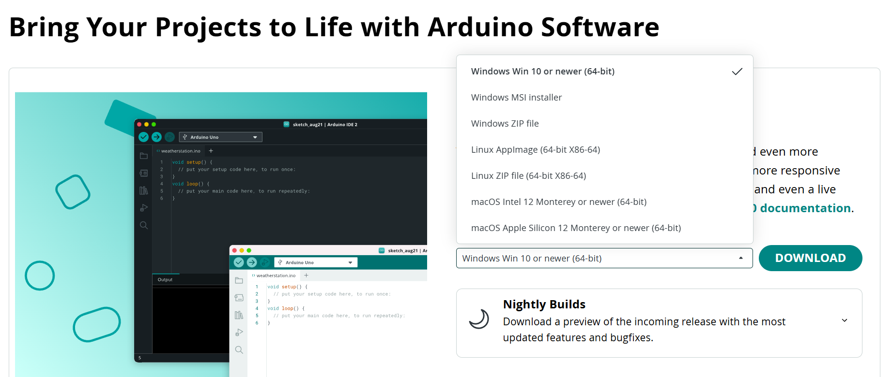
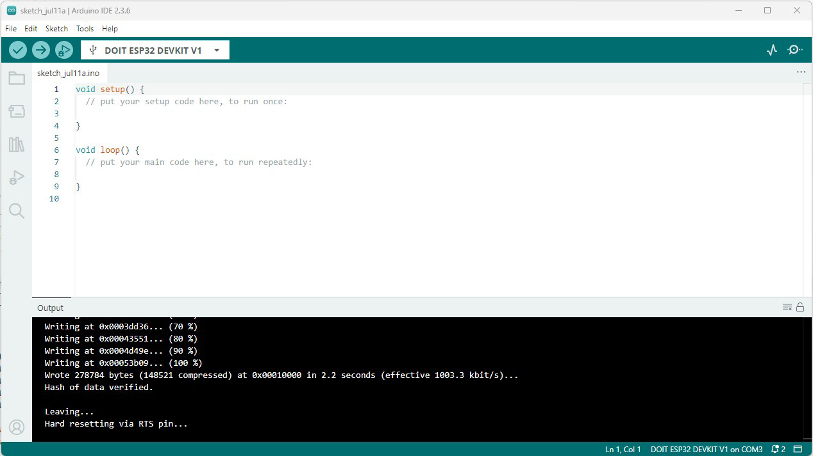
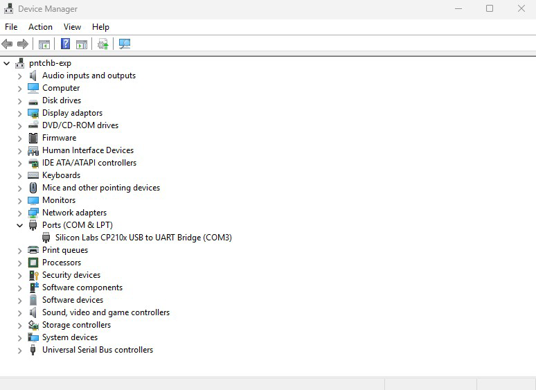
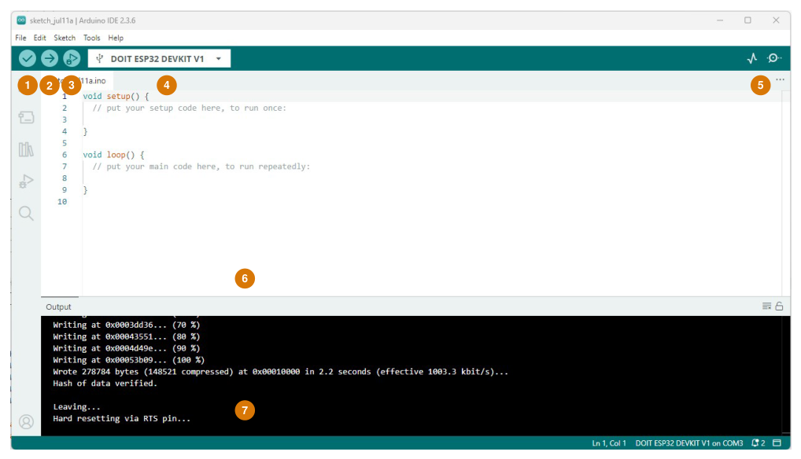
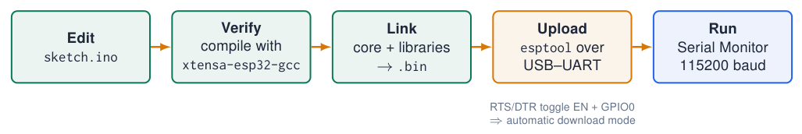
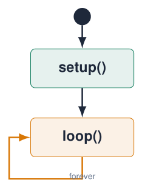
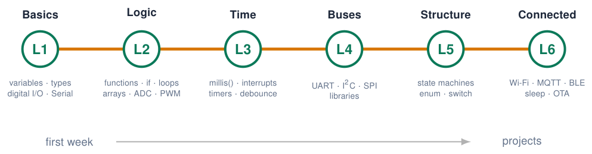

Arduino IDE Setup¶
Step 1: install the Arduino IDE¶

-
Download Arduino IDE 2.x for your OS from
arduino.cc/en/software. -
Windows: the installer or the Microsoft Store version both work.
-
macOS: drag the app to Applications; allow it in Privacy & Security.
-
Start the IDE once so it can create its folders (sketchbook in
Documents/Arduino).
Admin rights
On university laptops you may need admin rights for the USB driver.
Sources: Arduino IDE 2 Documentation
Installing the ESP32 core in Arduino IDE 2¶
-
Install Arduino IDE 2.x from
arduino.cc/en/software. -
File \(\rightarrow\) Preferences \(\rightarrow\) Additional boards manager URLs:
https://espressif.github.io/arduino-esp32/package_esp32_index.json
-
Tools \(\rightarrow\) Board \(\rightarrow\) Boards Manager: search esp32 by Espressif Systems, install 3.x.
-
Select ESP32 Dev Module (or DOIT ESP32 DEVKIT V1).
-
Select the port (
COMx//dev/ttyUSB0).

No port?
Install the CP210x or CH340 USB driver and use a data cable (not charge-only).
Sources: Arduino ESP32 Core Documentation; Arduino IDE 2 Documentation
Drivers and board settings¶

| Tools menu | Typical value |
|---|---|
| Board | ESP32 Dev Module |
| Upload speed | 921600 (115200 if it fails) |
| CPU frequency | 240 MHz (Wi-Fi/BT) |
| Flash size | 4 MB (32 Mb) |
| Partition scheme | Default 4 MB with spiffs |
| Core debug level | Info when debugging |
Sources: Arduino ESP32 Core Documentation
A tour of the IDE¶

-
Verify: compile only (find syntax errors).
-
Upload: compile + write to the board.
-
Debug (not used in this course).
-
Board and port selector.
-
Serial Plotter and Serial Monitor.
-
Editor: your sketch (
.ino). -
Output: compiler and upload messages. Read them!
Sources: Arduino IDE 2 Documentation
From sketch to running firmware¶

Sketch structure
setup() runs once after reset; loop() runs forever. Everything in loop() repeats as fast as possible: thousands of times per second.
“Connecting…_____” never ends?
Hold BOOT when “Connecting” appears, release when writing starts. Disconnect anything on GPIO 0, 2, 12.
The structure of every sketch¶

-
void setup()runs once after power-up or reset: initialisation (pin modes, Serial, sensors). -
void loop()runs again and again, for as long as the board has power. -
Statements inside the braces
{ }run top to bottom, one after the other. -
Code outside both functions: global variables, constants,
#include, your own functions. -
voidmeans: the function returns nothing.
There is no “end”
An embedded program never finishes. When loop() reaches its last line, it simply starts again at the top.
Sources: Arduino Language Reference; Embedded Programming, lectures 1–6
Anatomy of a sketch¶
/*
Blink the four LEDs of the course board
Author: you, date
*/
#include <Arduino.h> // 1. libraries
const int LED_PINS[] = {23, 22, 21, 4}; // 2. globals
const int DELAY_MS = 300;
void allLeds(bool on) { // 3. own functions
for (int i = 0; i < 4; i++) {
digitalWrite(LED_PINS[i], on);
}
}
void setup() { // 4. runs once
for (int i = 0; i < 4; i++) {
pinMode(LED_PINS[i], OUTPUT);
}
}
void loop() { // 5. runs forever
allLeds(true); delay(DELAY_MS);
allLeds(false); delay(DELAY_MS);
}
-
Comment header: what, who, when.
-
Includes: libraries you use (
Arduino.his added automatically in.ino). -
Global constants and variables: visible everywhere; pin numbers live here.
-
Your own functions: give a name to a job.
-
setup()andloop().
Copying code from these slides
Select, copy, paste in the IDE, then press Ctrl+T (Auto Format).
Hello, ESP32: Serial output¶
void setup() {
Serial.begin(115200); // UART0 -> USB
delay(500);
Serial.println("Hello, ESP32!");
Serial.printf("CPU: %u MHz, cores: %u\n",
(unsigned) getCpuFrequencyMhz(),
(unsigned) ESP.getChipCores());
}
void loop() {
Serial.printf("Uptime: %lu ms\n", millis());
delay(1000);
}
-
Serial.begin(115200): match the baud rate in the Serial Monitor. -
printfis available on ESP32 (not on the Uno). -
ESPobject: chip info, free heap, MAC …
Garbage on the monitor?
Wrong baud rate, or the boot log at 74880 baud.
The Serial Monitor and the Serial Plotter¶
Serial Monitor (magnifier icon, top right)
-
Shows the text your sketch prints with
Serial.print(). -
The baud rate in the monitor must match
Serial.begin(115200). -
You can also send text to the board (input line at the top).
-
Choose the line ending: Newline is easiest for commands.
Serial Plotter (graph icon)
-
Draws numbers as live graphs.
-
One value per line, or several separated by commas:
Serial.printf("pot:%d,light:%d\ n", a, b); -
Labels before the colon become the legend.
-
Only one of the two windows can use the port at a time.
Upload fails with “port busy”?
Close other programs that use the COM port (another IDE window, PuTTY, a Python script).
Troubleshooting the first upload¶
The programming roadmap of this course¶

Tip
Code slides carry these level tags. Level 6 is extension material for projects.
Further material: the original setup resources¶
Install and practise¶
Apply the course-board settings
Setup instructions for a generic ESP32 may use different LEDs and bus pins. Use the schematic and pin map in the course-board chapter.
Sources: Lecture 1, slides 25–26 and 48 Embedded Programming, lectures 1–6
Exercises: setting up¶
Exercise 1 – Install and blink
Install the IDE and the ESP32 core, select the board and port, open File \(\rightarrow\) Examples \(\rightarrow\) 01.Basics \(\rightarrow\) Blink, change LED_BUILTIN to 2 and upload. Then make it blink 5\(\times\) faster.
Exercise 2 – Hello you
Print your name, student number and the CPU frequency once in setup(); print a counter that increases every second in loop().
Exercise 3 – Break it on purpose
Remove a ;, a } and misspell pinMode. Write down the exact error message for each. You will meet them again!